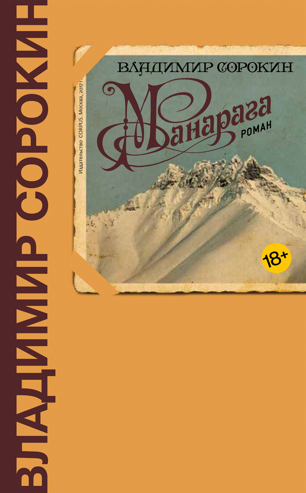

<!DOCTYPE html>
<html prefix="og: http://ogp.me/ns#"></html>
<head>
  <meta charset="utf-8"/>
  <meta name="viewport" content="width=device-width, initial-scale=1.0"/>
  <meta property="og:url" content="http://chernotrop.soshnikov.space/sorokin-manaraga"/>
  <meta property="og:type" content="article"/>
  <meta property="og:title" content="О романе Владимира Сорокина «Манарага»"/>
  <meta property="og:description" content="Неплохо, но до пьедестала не дотягивает"/>
  <meta property="og:image" content="http://chernotrop.soshnikov.space/img/sorokin-manaraga-preview.jpg"/>
  <meta property="og:image:width" content="1200"/>
  <meta property="og:image:height" content="600"/>
  <link href="https://fonts.googleapis.com/icon?family=Material+Icons" rel="stylesheet"/>
  <link rel="stylesheet"/><!-- Yandex.Metrika counter --> <script type="text/javascript" > (function(m,e,t,r,i,k,a){m[i]=m[i]||function(){(m[i].a=m[i].a||[]).push(arguments)}; m[i].l=1*new Date();k=e.createElement(t),a=e.getElementsByTagName(t)[0],k.async=1,k.src=r,a.parentNode.insertBefore(k,a)}) (window, document, "script", "https://mc.yandex.ru/metrika/tag.js", "ym"); ym(56951962, "init", { clickmap:true, trackLinks:true, accurateTrackBounce:true, webvisor:true, trackHash:true }); </script> <noscript><div></div></noscript> <!-- /Yandex.Metrika counter -->
  <title>О романе Владимира Сорокина «Манарага»</title>
<link href="./css/style.bundle.css" rel="stylesheet"></head>
<body class="body_light">
  <header class="header header_dark">
    <div class="header__logo">
      <div class="logo logo_dark"><a class="logo__link" href="/">ЧЕРНОТРОП</a></div>
    </div>
    <nav class="header__menu"><a class="menu-item menu-item_active" href="index.html" target="blank">главная</a><a class="menu-item" href="contacts.html">контакты</a><a class="menu-item" href="http://ttttt.me/blacktrope" target="blank">telegram-канал</a>
    </nav>
    <div class="header__menu_mobile" id="modeValue"><a href="menu.html">
        <svg xmlns="http://www.w3.org/2000/svg" width="24px" height="24px" viewBox="0 0 24 24">
          <path d="M0 0h24v24H0z" fill="none"></path>
          <path class="icon_white" d="M3 18h18v-2H3v2zm0-5h18v-2H3v2zm0-7v2h18V6H3z"></path>
        </svg></a>
    </div>
  </header>
  <article class="article">
    <div class="article__header">
      <h1 class="article__headline">О романе Владимира Сорокина «Манарага»</h1>
      <p class="article__description">Неплохо, но до пьедестала не дотягивает</p>
    </div>
    <div class="article__content">
      <div class="article__content-row">
        <div class="article__content-left">
          <p>Новый роман Сорокина громко грохнул в начале года и так же стремительно потонул в море новостей — возможно, из-за того, что «Манарага» даже близко не претендует на пьедестал произведений признанного прозаика.</p>
          <p>Но предшествующие заслуги автора не отменяют нынешних. «Манарага» — тот случай, когда книга удаётся уже на уровне идеи. Задумка Сорокина охотно деконструируется, слои заманчиво отделяются друг от друга, являя читателю одновременно простоту и гениальность. Люди жгут книги. Люди жгут книги ради гастрономического потребления. Бумажные книги вымирают. Книги заменяет искусственный интеллект. У книг есть вкус. У книг останется лишь эксклюзивность. И так далее.</p>
          <p>Добротную идею Сорокин мастерски обжаривает в монолитном стиле и жанровом разнообразии. Дневниковые записи сменяют нарочито неумелые рассказы второстепенных героев, диалоги трансформируются в мини-пьесу или коллективное пение, прямая речь перетекает в поэтизированную притчу, но текст ни разу не спотыкается на переходах и не сбивает ритм.</p>
        </div>
        <div class="article__content-right">
          <figure>
            <figcaption>Владимир Сорокин «Манарага». Издательство «Корпус», 2017. 256 с.</figcaption>
          </figure>
        </div>
      </div>
      <div class="article__content-row">
        <div class="article__content-left">
          <p>Сорокин высмеивает пошлость современных традиционалистов, но сам ни разу не заходит за черту: и гастрономические изыски, и эротические сцены звучат сочно и органично. Всё это приправлено чисто набоковскими зарисовками одновременно мультикультурной и реваншистской Европы будущего</p>
          <p>Кажется, многослойной идее не хватает размаха в рамках небольшой книжки. Сорокин мог, но не захотел превращать «Манарагу» в толстый всеобъемлющий роман и он абсолютно прав. На толстом романе не прочтёшь что-то лёгкое, а вот на ёмком, фактурном издании маэстро приготовит небольшой сочный рибай, после которого читатель встанет из-за стола немножечко голодным.</p>
          <div class="article-author">⚒︎<br/><span></span><a href="https://soshnikov.space/" target="blank"><span>Артём Сошников</span></a></div>
          <div class="article-year"><span>Петроград</span>, <span>2017</span>
          </div>
        </div>
      </div>
    </div>
  </article>
<script type="text/javascript" src="./js/bundle.js"></script></body>